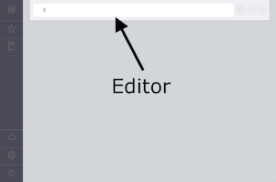

<article class="guide">
  <carousel class="deck container-fluid">
    <slide class="row-fluid">
      <div class="col-sm-3">
        <h3>Introduction</h3>
        <p class="lead">Getting started with Neo4j Browser</p>
      </div>
      <div class="col-sm-6">
        <p>
          Neo4j Browser is a command driven client, like a web-based shell environment.
           It is perfect for running ad-hoc graph queries, with just enough ability
          to prototype a Neo4j-based application.
        </p>
        <ul class="big">
          <li>Developer focused, for writing and running graph queries with Cypher</li>
          <li>Exportable tabular results of any query result</li>
          <li>Graph visualization of query results containing nodes and relationships</li>
          <li>Convenient exploration of Neo4j's REST API</li>
        </ul>
      </div>
      <div class="col-sm-3"></div>
    </slide>
    <slide class="row-fluid">
      <div class="col-sm-3">
        <h3>Editor</h3>
        <p class="lead">Command editing and execution</p>
      </div>
      <div class="col-sm-5">
        <p>
          The editor is the primary interface for entering and running commands.
          Enter Cypher queries to work with graph data. Use client-side
          commands like<code>:help</code> for other operations.
        </p>
        <ul>
          <li>Single line editing for brief queries or commands</li>
          <li>Switch to multi-line editing with &lt;shift-enter&gt;</li>
          <li>Run a query with &lt;ctrl-enter&gt;</li>
          <li>History is kept for easily retrieving previous commands</li>
        </ul>
      </div>
      <div class="col-sm-4"></div>
    </slide>
    <slide class="row-fluid">
      <div class="col-sm-3">
        <h3>Stream</h3>
        <p class="lead">Scrolling series of result frames</p>
      </div>
      <div class="col-sm-5">
        <p>
          A result frame is created for each command execution, added to the top
          of the stream to create a scrollable collection in reverse chronological order.
        </p>
        <ul>
          <li>Special frames like data visualization</li>
          <li>Expand a frame to full screen</li>
          <li>Remove a specific frame from the stream</li>
          <li>Clear the stream with the &nbsp;<code>:clear</code> command</li>
        </ul>
      </div>
      <div class="col-sm-4"></div>
    </slide>
    <slide class="row-fluid">
      <div class="col-sm-3">
        <h3>Frame code view</h3>
        <p class="lead">Viewing requests and responses</p>
      </div>
      <div class="col-sm-5">
        <p>The code tab displays everything sent to and received from the Neo4j server, including:</p>
        <ul>
          <li>Request URI, HTTP method and headers</li>
          <li>Reponse HTTP response code and headers</li>
          <li>Raw request and response content in JSON format</li>
        </ul>
      </div>
      <div class="col-sm-4"></div>
    </slide>
    <slide class="row-fluid">
      <div class="col-sm-3">
        <h3>Sidebar</h3>
        <p class="lead">Convenient clickable access</p>
      </div>
      <div class="col-sm-5">
        <p>
          The sidebar expands to reveal different functional panels
          for common queries and information.
        </p>
        <ul>
          <li>Database metadata and basic information</li>
          <li>Saved scripts organized into folders</li>
          <li>Information links for docs and reference</li>
          <li>Credits and licensing information</li>
        </ul>
      </div>
      <div class="col-sm-4"></div>
    </slide>
    <slide class="row-fluid">
      <div class="col-sm-4">
        <h3>Next steps</h3>
        <p class="lead">Neo4j is like a mashup of a REPL + lightweight IDE + graph visualization.</p>
      </div>
      <div class="col-sm-4">
        <h3>Keep getting started</h3>
        <ul class="undecorated">
          <li><a play-topic="concepts">Concepts</a> - GraphDB 101</li>
          <li><a play-topic="cypher">Cypher</a> - query language</li>
        </ul>
      </div>
      <div class="col-sm-4">
        <h3>Jump into code</h3>
        <ul class="undecorated">
          <li><a play-topic="movie-graph">The Movie Graph</a></li>
        </ul>
      </div>
    </slide>
  </carousel>
</article>